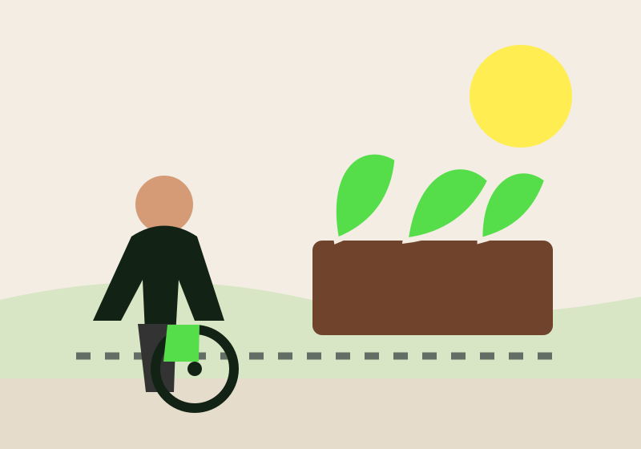

HORTUS · ACESSO E INCLUSÃO
Uma horta acolhedora começa com acesso
Informações claras e espaços bem planejados ajudam mais pessoas a participar com autonomia.
Como participar
ACESSO E INCLUSÃO
Acessibilidade desde o planejamento
Considere diferentes necessidades desde a escolha do local. Antes de uma visita, informe o que foi verificado e o que ainda precisa de confirmação.
GUIA DE VERIFICAÇÃO
O que vale conferir antes de uma visita
Abra cada etapa para ver pontos práticos de planejamento.
01 Chegada e circulação
Verifique piso, largura livre, inclinações, degraus, áreas de descanso e opções de transporte próximas. Informe o que foi observado e o que ainda precisa de confirmação.
02 Canteiros e ferramentas
Considere alturas variadas, espaço de aproximação, assentos e ferramentas com diferentes formas de uso. Pergunte ao grupo quais ajustes facilitariam a participação.
03 Atividade e comunicação
Antecipe duração, tarefas, pausas, sombra, água e condições dos banheiros. Compartilhe essas informações no convite, junto com uma pessoa de contato.
ANTES DE RECEBER VISITAS
Informe o que foi conferido
Evite prometer acessibilidade sem verificar o espaço. Convide pessoas com diferentes necessidades a participar do planejamento e pergunte quais ajustes tornariam a atividade mais confortável.